Tether-Inertial Localization for Planetary Drones
TL;DR: We localize a tethered drone from the tether itself. Length, angle, and tension sensors in a custom Tether Management System feed a closed-form catenary model that returns the drone position relative to its base — plus an analytical uncertainty derived from the sensor noise. A variance-gated Gaussian Process removes the residual error left by the model's assumptions. Across 37 minutes of closed-loop flight with tethers up to 4.5 m, this achieves 7.4 cm RMSE from the analytical model alone and 5.2 cm with the GP, an order of magnitude better than the state of the art, and accurate enough to fly on tether feedback alone in feature-sparse environments such as planetary surfaces.
Overview
Contributions
- A tether-inertial localization approach that provides a non-drifting position estimate together with its analytically computed uncertainty, derived from the tether measurements.
- A variance-gated Gaussian Process, trained on pairs of tether states and residual errors, that compensates localization errors while preserving the analytical accuracy guarantees.
- A comprehensive experimental validation of the approach on a custom-built Tether Management System, in closed-loop flight in ESA's Planetary Robotics Lab.
To the best of our knowledge, this is the first work to demonstrate closed-loop tether-based localization of a TUAV with sub-10 cm accuracy and variable tether lengths, enabling precise positioning over a large volume using only the tether-based estimate.
Methods
Catenary Model
We model the tether as an idealized hanging chain — a catenary — which rests on three assumptions: the tether has negligible bending stiffness and negligible extensibility relative to its overall length, it has a uniform mass distribution, and it hangs between exactly two points in a uniform gravitational field. Note that these assumptions extend naturally to lower-gravity environments, as long as the gravitational field is uniform.
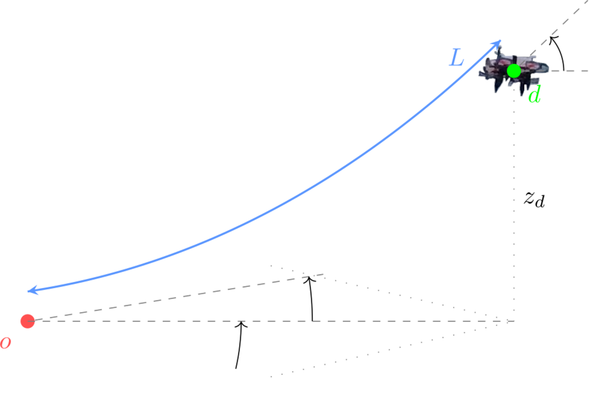
3D visualization of the catenary problem showing the state variables \(\beta_o\), \(\beta_d\), \(\alpha_o\) and \(L\): the elevation angles at the origin and at the drone, the azimuth angle at the origin around the z-axis, and the tether length, respectively.
The catenary has four degrees of freedom and therefore requires four independent measurements for unique identification: we use the tether length \(L\), the base elevation angle \(\beta_o\), the base azimuth angle \(\alpha_o\), and the drone elevation angle \(\beta_d\). For readability, and without loss of generality, we treat the problem as planar. Within that plane the catenary curve relates the radial (horizontal) distance \(r\) to the vertical axis as $$ \begin{align} z(r) = a \cosh\left(\frac{r-b}{a}\right) + c, \end{align} $$ where \(a\), \(b\) and \(c\) define the curvature and position of the curve. At each timestep, these unknown parameters and the drone's radial distance \(r_d\) are determined from the sensor measurements through four constraints: the curve passes through the origin, its slope matches the measured elevation angle at the origin and at the drone, and its arc length equals the measured tether length, $$ \begin{align} z(0) &= 0, \qquad \left.\frac{dz}{dr}\right|_{r=0} = \tan\beta_o, \qquad \left.\frac{dz}{dr}\right|_{r=r_d} = \tan\beta_d,\\ L &= \int_0^{r_d}\sqrt{1 + (z'(r))^2}\,dr. \end{align} $$ Taking the derivative of the curve, substituting it into the arc-length integral, and integrating from \(0\) to \(r_d\) yields \(L = a(\tan\beta_d - \tan\beta_o)\), which provides \(a\) in terms of known variables. The remaining parameters follow directly: $$ \begin{align} a &= \frac{L}{\tan\beta_d - \tan\beta_o}, & b &= -a\sinh^{-1}(\tan\beta_o),\\ c &= -a\cosh\left(\frac{b}{a}\right), & r_d &= b + a\sinh^{-1}(\tan\beta_d). \end{align} $$
The planar catenary solve. Sweeping the measured inputs \(\beta_o\), \(\beta_d\) and \(L\) traces out the corresponding tether curve, and with it the drone position \((x, y)\) at its far end. Every combination of the three measurements admits exactly one curve — which is what makes the position recoverable from the tether alone.
Rotating the planar solution by the azimuth angle \(\alpha_o\) finally gives the full 3D position of the drone: $$ \begin{align} x_d = r_d\cos\alpha_o, \qquad y_d = r_d\sin\alpha_o, \qquad z_d = a\cosh\left(\frac{r_d - b}{a}\right) + c. \end{align} $$ This closed-form solution enables real-time computation with minimal computational overhead — an important property for the compute-constrained platforms typical of planetary exploration.
The same curve in 3D. The planar solution is swept around the z-axis by the base azimuth angle \(\varphi = \alpha_o\), which places the drone anywhere in the volume reachable by the tether. Varying \(\beta_o\), \(\beta_d\) and \(L\) reshapes the curve within that plane.
Model Uncertainty
Because the catenary algorithm is a closed-form solution, its accuracy depends directly on the measurement uncertainty of the variables that feed into it. By propagating the sensor noise through the model we can predict the impact of this error on the aleatoric uncertainty of the position estimate. We derive the partial derivatives of \(x_d, y_d, z_d\) with respect to each input variable analytically (see the paper for the full expressions) and assemble them into the Jacobian \(\mathbf{J}\) of the estimation output with respect to the sensor input. The output covariance then follows as $$ \begin{align} \mathbf{\Sigma}_{\text{output}} = \mathbf{J}\,\mathbf{\Sigma}_{\text{input}}\,\mathbf{J}^\top . \end{align} $$ Intuitively, these expressions show that in close proximity to the base the length measurement dominates the uncertainty, whereas at large tether lengths the angle measurements contribute more. Empirically, the predicted and observed error distributions overlap closely across all three axes, with only a small bias underestimating the height. This lets us provide confidence intervals for the position estimate and integrate it seamlessly into conventional estimator frameworks.
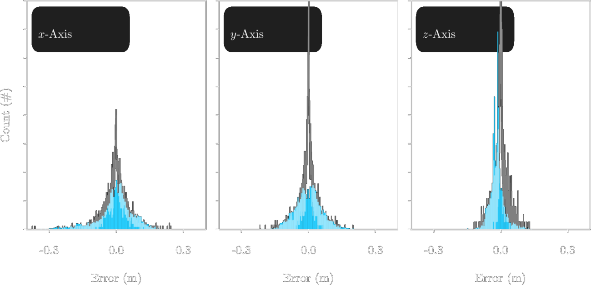
Empirically observed (blue) and predicted (grey) error distributions across 3000 samples for all estimation axes. The distributions clearly overlap, with only minor offsets in the \(z\)-axis, demonstrating the accuracy of our uncertainty prediction.
GP-Based Residual Error Compensation
In practice, tether stiffness, friction in the system, sensor noise, and other non-linear effects introduce discrepancies with respect to the idealized model. To capture them, we collect ground truth positions via Motion Capture alongside the tether sensor data and train a Sparse Gaussian Process to predict the residual error. The input vector consists of the tether-localized position and the tether state, \(\begin{bmatrix} x_d & y_d & z_d & \alpha_o & \beta_o & \beta_d & L\end{bmatrix}^\top\), and the 3-dimensional output is the residual \(\mathbf{e}_d = \begin{bmatrix} x_{gt} - x_d & y_{gt} - y_d & z_{gt} - z_d\end{bmatrix}^\top\). This describes a purely geometric relationship, which makes the residual estimate transferable across different gravitational regimes — just like the analytical model itself.
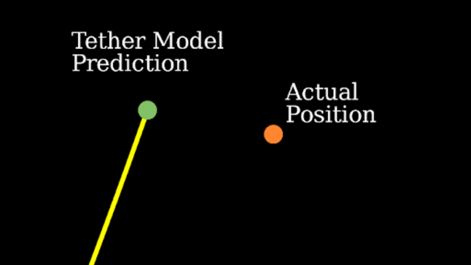
(a) the analytical prediction
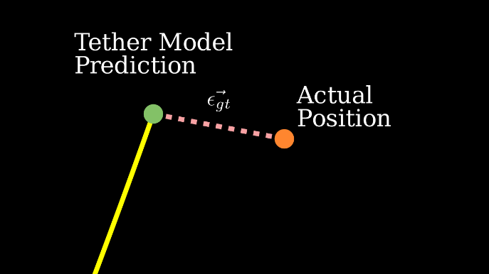
(b) the residual \(\vec{\epsilon}_{gt}\)
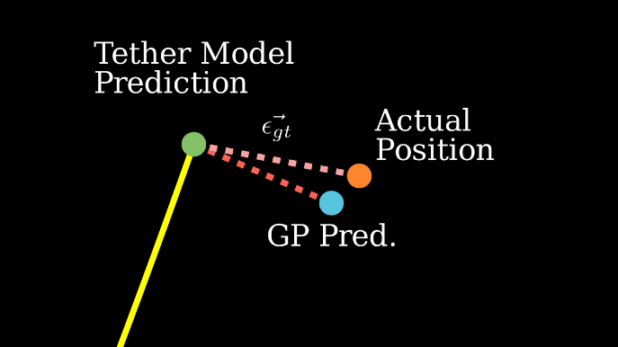
(c) the GP correction
What the GP actually learns. (a) The catenary model places the drone at the end of the tether curve, but the idealizing assumptions leave it offset from the actual position. (b) That offset is the residual \(\vec{\epsilon}_{gt}\) — the quantity we regress on, given the tether state. (c) Adding the GP's predicted residual to the analytical estimate moves it most of the way onto the true position.
Training uses 150k data points from 30 flights with MoCap in the loop; of 30 test flights, 25 with diverse trajectories are used for training and five for testing. Because GPs scale poorly, the training data is sparsified using K-means clustering, and the GP is trained with the Adam optimizer against the Evidence Lower Bound. An ablation over the number of inducing points and training epochs showed that RMSE grows with more inducing points due to overfitting; since inference time also scales quadratically with them, we selected the model with 300 inducing points, which both performs best and offers the lowest inference time.
A crucial detail is that we do not trust the GP blindly. We use the variance of the Gaussian output to judge whether the current state lies within the training regime, and scale the correction down — or disable it entirely — when it does not. Concretely, we combine the GP output and the tether-localized position convexly: $$ \begin{align} \mathbf{x}_{d,comp} &= \mathbf{x}_d + \lambda\,\mathbf{e}_d,\\ \text{where}\quad \lambda &= 1 - \frac{\texttt{clamp}(\sigma_{\text{GP}}, \sigma_{\min}, \sigma_{\max}) - \sigma_{\min}}{\sigma_{\max} - \sigma_{\min}}, \end{align} $$ with \(\sigma_{\text{GP}}\) the variance of the GP output and the thresholds set empirically to \(\sigma_{\min} = 0.015\,\)m and \(\sigma_{\max} = 0.065\,\)m. These correspond to the 10th and 90th percentiles of the localization error observed for the standalone tether-based estimator, i.e. they define best- and worst-case performance baselines. The GP correction is applied fully when its predictive uncertainty falls below \(\sigma_{\min}\), and is discarded once it exceeds \(\sigma_{\max}\) — indicating lower reliability than the worst observed baseline. This gives hard safety guarantees and makes it possible to test the GP inside the closed-loop localization pipeline.
Variance-based scaling of the residual correction. The shaded disc is the GP's own predictive uncertainty. When it is small the correction is trusted and applied in full, pulling the estimate onto the true position; as the uncertainty grows the correction is faded out, until at 100% the estimate falls back entirely onto the analytical catenary prediction. The GP can therefore only ever help — in unfamiliar tether states it defers to the model whose accuracy is analytically bounded.
Tether Management System
The TMS fulfills two functions: collecting the tether state variables \((\alpha_o, \beta_o, \beta_d, L)\) required for localization, and managing tether length and tension to prevent entanglement while preserving drone mobility. Since the precision of its fabrication directly determines the position uncertainty, the design targets low sensor uncertainty throughout.
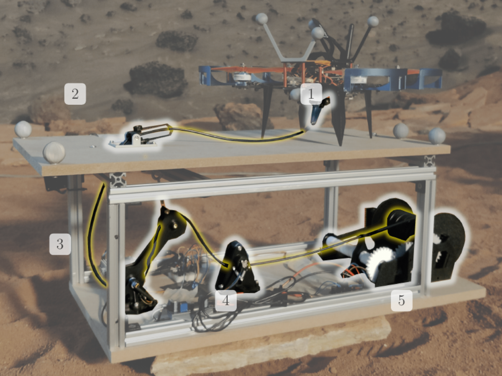
The Tether Management System. Components 1 & 2 are the drone and platform angle sensors, 3 is the tension sensor, 4 is the length sensor, and 5 is the tether drum. The tether is shown in yellow.
Angle sensors (1, 2). Both sensors employ a two-axis gimbal design with low-friction potentiometers on each axis, measuring elevation and azimuth of the tether relative to the drone and platform vertical axes. The platform-mounted sensor lets the tether traverse both rotation axes before entering the TMS; to reduce friction at low angles — when the tether lies almost horizontal — the design incorporates small rollers mounted on metal pins. Both sensors are calibrated by taking orthographic pictures in-line with the axis while moving the tether in the axis plane, which yields a linear fit between sensor values and tether angles. Using the drone's attitude from its IMU, the system compensates the sensed tether angle so that the output is always with respect to the horizon.
Length sensor (4). A dual-roller system in which the upper roller connects to a rotary encoder and the lower roller operates on a spring-actuated shaft. Two lateral springs create a pinching force against the upper roller, preventing slippage and ensuring accurate length measurement. The design also functions as a guide pulley, directing the tether from the variable tension sensor position to the fixed drum location. Calibration measures dispensed tether length with a laser rangefinder while recording the corresponding encoder values.
Tension control (3, 5). Maintaining constant tension is what keeps the catenary assumption valid: it prevents buckling, looping, or ground contact while avoiding an overly taut elastic link, and it keeps the angle sensors aligned with the true cable direction. The tether drum assembly (5) uses a stepper motor-driven system with a self-reversing leadscrew mechanism, which distributes the tether uniformly across the drum width. The tension sensor (3) is a spring-actuated arm that pivots around a lower axis with its upper end connected to a spring; as tension increases the arm rotates downward, and the angular displacement is measured via a potentiometer, calibrated against a spring balance across 0–6 N. A PD controller holds the tension at 3.5 N, using a low-pass filter for noise attenuation and a quadratic proportional term — reduced sensitivity for small deviations (< 1 N) and enhanced responsiveness above: $$ \begin{align} \omega = k_P(\tau_s - \tau)\,|\tau_s - \tau| - k_D\dot{\tau}, \end{align} $$ where \(\omega\) is the motor speed, \(\tau_s\) and \(\tau\) are the tension setpoint and value, and \(k_P, k_D\) the gains. This prevents oscillations while ensuring rapid response to significant tension changes. Note that the additional tension needs to be compensated by the UAV to maintain its position; in our case this is simply treated as an external disturbance, to be rejected by the position controller.
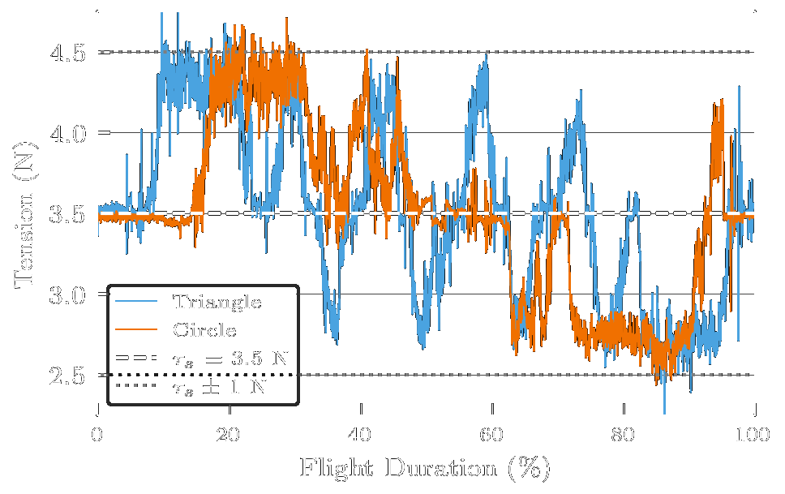
The tether tension for a triangular and a circular flight experiment, and its reference value \(\tau_s\). The controller tracks the setpoint without causing large oscillations, staying within the reactivity threshold of \(\pm 1\,\)N. The inflection points of the triangular flights can be seen causing extremes in tension.
System integration. The tether is a highly flexible silicone-insulated cable (22 kg/km density) — light enough to approximate the catenary assumptions, yet with sufficient mass to overcome sensor friction. From the measured static angle sensor friction of 0.029 N per sensor axis we derive a required lower bound of 15 g/m, which the chosen tether satisfies. The mechanical framework uses 20 mm aluminium extrusions with wooden platforms supporting all sensor components. Control electronics include an Arduino for motor control and sensor interfacing, and a Raspberry Pi 5 with a dedicated ADC for angle sensor acquisition and ROS communication. The drone carries a Raspberry Pi 3A as a companion computer, interfacing with both the PX4 autopilot and an onboard ADC for angle sensor data. The flight controller consumes the tether-based estimate and fuses it with the IMU via an Extended Kalman Filter to obtain high-frequency state estimates.
Results
We evaluated the approach in the Planetary Robotics Lab at ESA's ESTEC, using the custom TMS and a HolyBro QAV250 quadrotor. A VICON motion capture system provides ground truth, which constrains the operational height to approximately 4.5 m due to camera coverage. Importantly, MoCap is used only for ground truth comparison — the drone's position feedback is supplied solely by our tether-inertial localization framework, and all results shown are the raw results before merging with the inertial odometry in the drone's EKF.
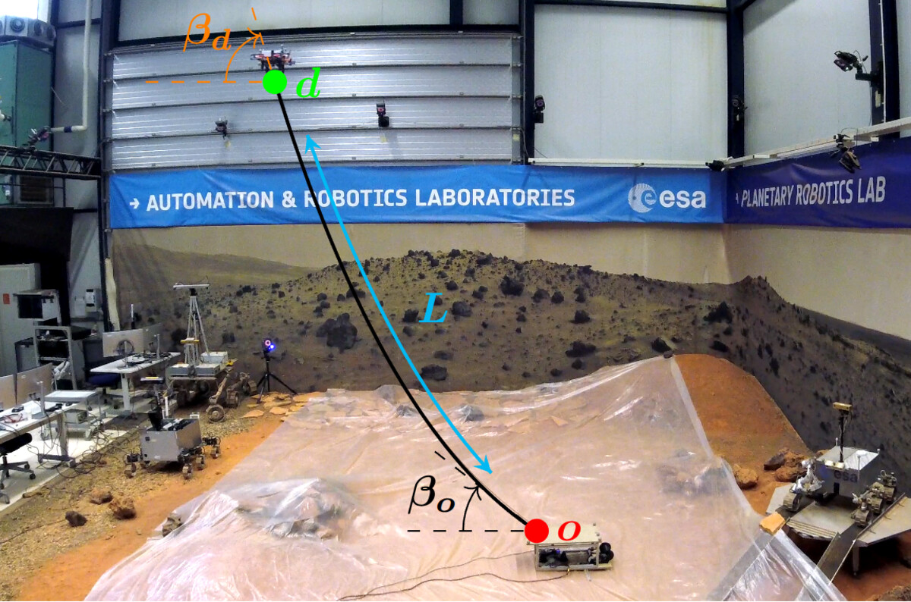
A localization experiment in the Planetary Robotics Lab at ESA's ESTEC, with the catenary curve and its state variables drawn on the real setup: the anchor point \(o\) on the Tether Management System, the drone \(d\) at the far end of the tether, the elevation angles \(\beta_o\) and \(\beta_d\) at either end, and the tether length \(L\) along the curve.
The experimental campaign comprises 17 closed-loop flight missions totaling 37 minutes of flight data across three trajectory geometries — circular, triangular, and figure-eight — at three altitude configurations: 2 m height with 1.5 m characteristic dimension, 3.5 m height with 2.5 m characteristic dimension, and 2 m height with 1.5 m characteristic dimension on a sinusoidal altitude profile. The tether's maximum length varies between 3 m and 4.5 m for the different sizes. Each mission follows a standardized protocol: vertical takeoff to the target altitude, autonomous execution of the prescribed trajectory at 0.2 m/s, then descent back onto the platform. Of the 17 flights, 11 use the tether-inertial localization and 6 the GP-enhanced variant.
A closed-loop flight in the Planetary Robotics Lab. The drone takes off from the Tether Management System, follows the prescribed trajectory, and lands back on the platform — with the tether-inertial estimate serving as the only source of position feedback.
Table I — Localization performance across trajectories and estimation modes (tether-inertial (TI) and GP). Average, worst, and best performances are bold in the last column. RMSEs for trials with comparable characteristics from related works are included for comparison.
| Shape | Size (m) | Source | nflights | Duration (min) | RMSE (m) |
|---|---|---|---|---|---|
| All | All | TI | 11 | 25.0 | 0.0744 |
| All | All | GP | 6 | 11.8 | 0.0518 |
| Circle | 1.5 | TI | 4 | 8.45 | 0.0598 |
| Circle | 2.5 | TI | 3 | 7.5 | 0.0927 |
| Circle | 1.5 | GP | 1 | 1.8 | 0.0416 |
| Circle | 2.5 | GP | 1 | 2.0 | 0.0649 |
| Triangle | 1.5 | TI | 1 | 2.3 | 0.0544 |
| Triangle | 2.5 | TI | 2 | 4.5 | 0.0787 |
| Triangle | 1.5 | GP | 1 | 2.3 | 0.0217 |
| Triangle | 2.5 | GP | 1 | 2.6 | 0.0572 |
| Eight | 1.5 | GP | 2 | 3.2 | 0.0566 |
| Circle (sinus. alt.) | 1.5 | TI | 1 | 2.3 | 0.0738 |
| Xiao et al. | 0.37 | ||||
| Borgese et al. | 0.66 | ||||
| Lima et al. | 1.1 | ||||
| Rico et al. | 0.95 | ||||
Across all experiments, tether-inertial position estimation achieves accuracies below 10 cm. Performance is better for trajectories with smaller characteristic dimensions, which follows directly from the uncertainty propagation: the uncertainty scales linearly with the tether length \(L\), which in turn grows with the characteristic dimension. The GP improves performance across all trials, achieving RMSEs down to 2.2 cm. Overall, going from tether-inertial localization (0.0744 m RMSE) to the GP-enhanced system (0.0518 m RMSE) represents a 30.3% decrease in RMSE, and an order of magnitude better performance than previous works — up to ten times better RMSE accuracy, outperforming the state of the art by at least a factor of four in all cases.
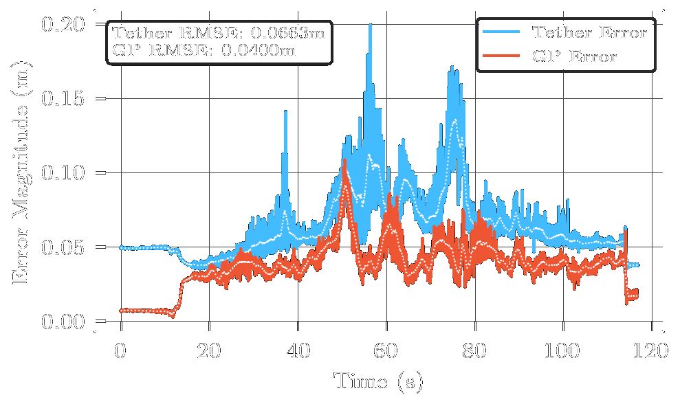
The magnitude of the positional error using tether localization and the GP-compensated error, during a circular flight experiment at 2 m height. At \(t \approx 58\,\)s and \(t \approx 78\,\)s the GP compensates for large spikes in the raw tether-inertial estimate. The second spike marks a trajectory inflection point, where the UAV reverses toward the origin and induces tether behavior unmodelled by the analytical model, but well compensated by the GP.
Looking at where in the workspace the error occurs, we observe error-prone regions concentrated at large positive \(x\) and \(y\) positions — especially clear for the larger flights, where the angle sensors deviate in the positive XY direction and sometimes cause errors of up to 0.30 m. This points to a biased systematic error on one side of the angle sensor.
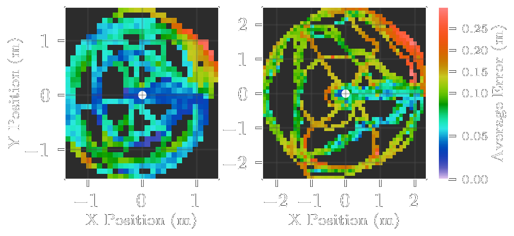
A top-down view of the average error for every 0.10 m square around the origin (white). Left is the average error for flights of 1.5 m characteristic dimension, right for flights with a 2 m dimension. Empty areas indicate that there are no samples in the voxel.
Finally, some tether configurations introduce genuine difficulties for state estimation. Notable deviations from the ground truth occur primarily at trajectory inflection points, which is particularly evident in the triangular pattern following sharp corners. Two factors cause this: excitation of the tether dynamics, and the low bandwidth of the tether tension controller. At inflection points the inertia of the tether makes it diverge from the quasi-static assumption of the catenary model, while the tension controller requires a minimum amount of time to re-converge to the appropriate tension. In this transient phase, overcoming the angle sensor friction becomes increasingly difficult as tether tension drops — the end of the angle sensor acts as a new anchor point until the friction can be overcome. The figure-eight trajectory exhibits the most challenging dynamics, requiring two rapid reductions in tether length per cycle, where tension drops below the 3.5 N setpoint and momentarily degrades angle sensor accuracy as the tether goes slack.
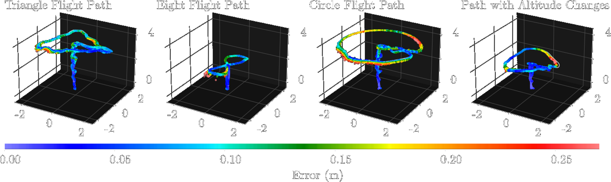
Examples of the different flight shapes used in the experiments. The tether-localized position is plotted in color according to the position error w.r.t. the ground truth flight path, which is plotted in white. We conduct experiments with triangular, circular, figure-eight, and sinusoidal height profile trajectories.
Conclusion
This work presents a drone–rover tether-inertial localization pipeline with centimeter-level positioning accuracy. In GNSS-denied environments, or wherever other methods such as visual-inertial odometry struggle, it offers a reliable alternative: a computationally efficient analytical catenary model paired with Gaussian Process error compensation, giving accurate real-time and non-drifting localization together with uncertainty guarantees derived from the sensor accuracies. Experimental validation over 25 minutes of flight demonstrated an average RMSE of 0.0744 m for the analytical model, reduced by 30.3% to 0.0518 m over 12 additional minutes with the variance-gated GP. This accuracy of approximately 5 cm represents an order-of-magnitude improvement over existing TUAV localization methods and enables autonomous flight in feature-sparse environments such as planetary surfaces.
In future work we intend to extend the estimation methodology to also infer the heading of the TUAV, using an orthogonal angle sensor at the anchor point, and to incorporate a tether dynamic model together with a GP with higher-order inputs to provide estimates of the UAV velocities and improve accuracy in highly dynamic regimes. We also aim to integrate the approach into a mobile rover with active feed-forward tether control, enabling the drone and TMS to cooperatively regulate tether length and avoid dynamic tether transients. Combined with space-grade sensors allowing operation at higher altitudes and larger tether lengths, this will create a robust rover–drone system suitable for challenging planetary exploration tasks.
BibTeX
The website template was adapted from John Barron and Michaël Gharbi.